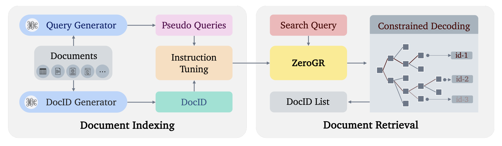
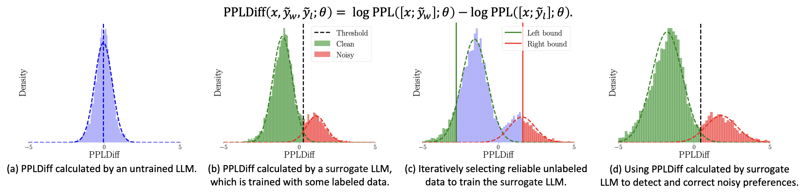
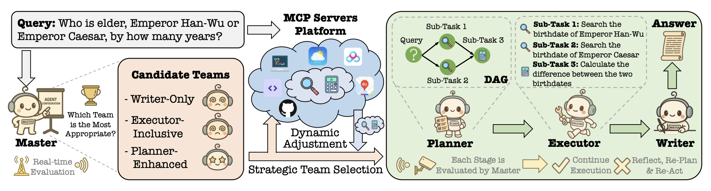
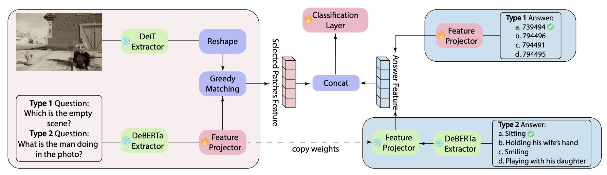
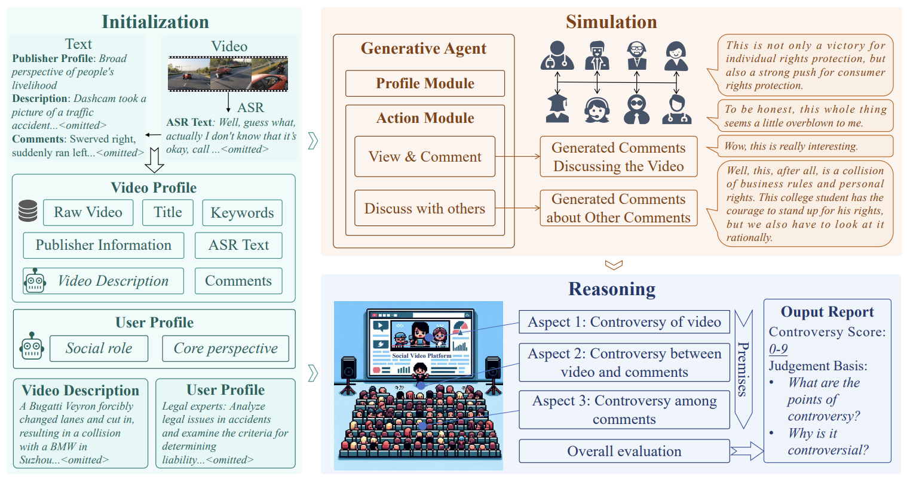
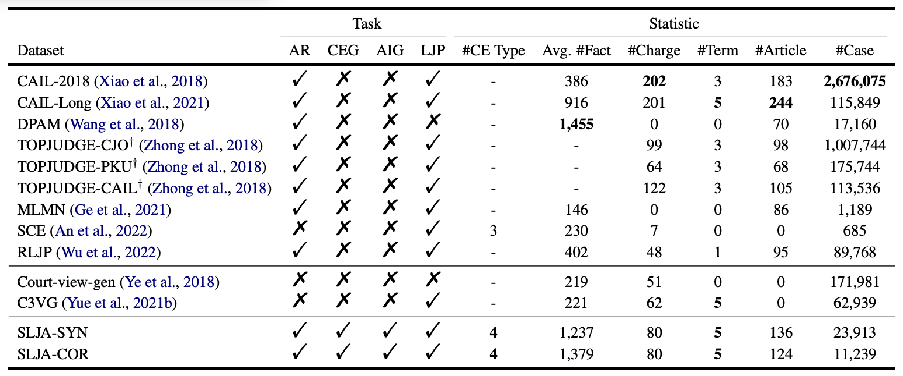

|
Keyi Kong 孔轲祎 Hi, I am a final-year undergraduate student at Taishan (Honors) College, Shandong University, working under the supervision of Associate Professor Zhaochun Ren. My research interests focus on Trustworthy Large Language Models (LLMs) and Generative Information Retrieval (GenIR). Additionally, I am passionate about competitive programming. I am currently seeking PhD positions for 2026 fall! If my background resonates with your work, I would welcome the opportunity to connect. |
Publications* Equal contribution |
|
ZeroGR: A Generalizable and Scalable Framework for Zero-Shot Generative Retrieval
Under Review

Generative retrieval (GR) reformulates information retrieval (IR) by framing it as the generation of document identifiers (docids), thereby enabling an end-to-end optimization and seamless integration with generative language models (LMs). Despite notable progress under supervised training, GR still struggles to generalize to zero-shot IR scenarios, which are prevalent in real-world applications. To tackle this challenge, we propose ZeroGR, a zero-shot generative retrieval framework that leverages natural language instructions to extend GR across a wide range of IR tasks. Specifically, ZeroGR is composed of three key components: (i) an LM-based docid generator that unifies heterogeneous documents (e.g., text, tables, code) into semantically meaningful docids; (ii) an instruction-tuned query generator that generates diverse types of queries from natural language task descriptions to enhance corpus indexing; and (iii) a reverse annealing decoding strategy to balance precision and recall during docid generation. We investigate the impact of instruction fine-tuning scale and find that performance consistently improves as the number of IR tasks encountered during training increases. Empirical results on the BEIR and MAIR benchmarks demonstrate that ZeroGR outperforms strong dense retrieval and generative baselines in zero-shot settings, establishing a new state-of-the-art for instruction-driven GR.
|
|
Perplexity-aware Correction for Robust Alignment with Noisy Preferences
Accepted by NeurIPS 2024

Alignment techniques are critical in ensuring that large language models (LLMs) output helpful and harmless content by enforcing the LLM-generated content to align with human preferences. However, the existence of noisy preferences (NPs), where the responses are mistakenly labelled as chosen or rejected, could spoil the alignment, thus making the LLMs generate useless and even malicious content. Existing methods mitigate the issue of NPs from the loss perspective by adjusting the alignment loss based on a clean validation dataset. Orthogonal to these loss-oriented methods, we propose perplexity-aware correction (PerpCorrect) from the data perspective for robust alignment which detects and corrects NPs based on the differences between the perplexity of the chosen and rejected responses (dubbed as PPLDiff). Intuitively, a higher PPLDiff indicates a higher probability of the NP because a rejected/chosen response which is mistakenly labelled as chosen/rejected is less preferable to be generated by an aligned LLM, thus having a higher/lower perplexity. PerpCorrect works in three steps: (1) PerpCorrect aligns a surrogate LLM using the clean validation data to make the PPLDiff able to distinguish clean preferences (CPs) and NPs. (2) PerpCorrect further aligns the surrogate LLM by incorporating the reliable clean training data whose PPLDiff is extremely small and reliable noisy training data whose PPLDiff is extremely large after correction to boost the discriminatory power. (3) Detecting and correcting NPs according to the PPLDiff obtained by the aligned surrogate LLM to obtain a denoised training dataset for robust alignment. Comprehensive experiments validate that our proposed PerpCorrect can achieve state-of-the-art alignment performance under NPs. Notably, PerpCorrect demonstrates practical utility by requiring only a modest amount of validation data and being compatible with various alignment techniques.
|
|
An LLM can Fool Itself: A Prompt-Based Adversarial Attack
Accepted by ICLR 2024

The wide-ranging applications of large language models (LLMs), especially in safety-critical domains, necessitate the proper evaluation of the LLM’s adversarial robustness. This paper proposes an efficient tool to audit the LLM’s adversarial robustness via a prompt-based adversarial attack (PromptAttack). PromptAttack converts adversarial textual attacks into an attack prompt that can cause the victim LLM to output the adversarial sample to fool itself. The attack prompt is composed of three important components: (1) original input (OI) including the original sample and its ground-truth label, (2) attack objective (AO) illustrating a task description of generating a new sample that can fool itself without changing the semantic meaning, and (3) attack guidance (AG) containing the perturbation instructions to guide the LLM on how to complete the task by perturbing the original sample at character, word, and sentence levels, respectively. Besides, we use a fidelity filter to ensure that PromptAttack maintains the original semantic meanings of the adversarial examples. Further, we enhance the attack power of PromptAttack by ensembling adversarial examples at different perturbation levels. Comprehensive empirical results using Llama2 and GPT-3.5 validate that PromptAttack consistently yields a much higher attack success rate compared to AdvGLUE and AdvGLUE++. Interesting findings include that a simple emoji can easily mislead GPT-3.5 to make wrong predictions. Our source code is available at https://github.com/GodXuxilie/PromptAttack.
|
|
Towards AI Search Paradigm
Technical Report

In this paper, we introduce the AI Search Paradigm, a comprehensive blueprint for next-generation search systems capable of emulating human information processing and decision-making. The paradigm employs a modular architecture of four LLM-powered agents (Master, Planner, Executor and Writer) that dynamically adapt to the full spectrum of information needs, from simple factual queries to complex multi-stage reasoning tasks. These agents collaborate dynamically through coordinated workflows to evaluate query complexity, decompose problems into executable plans, and orchestrate tool usage, task execution, and content synthesis. We systematically present key methodologies for realizing this paradigm, including task planning and tool integration, execution strategies, aligned and robust retrieval-augmented generation, and efficient LLM inference, spanning both algorithmic techniques and infrastructure-level optimizations. By providing an in-depth guide to these foundational components, this work aims to inform the development of trustworthy, adaptive, and scalable AI search systems.
|
|
SoundMind: RL-Incentivized Logic Reasoning for Audio-Language Models
Accepted by EMNLP 2025 (Oral presentation)

While large language models have demonstrated impressive reasoning abilities, their extension to the audio modality, particularly within large audio-language models (LALMs), remains underexplored. Addressing this gap requires a systematic approach that involves a capable base model, high-quality reasoning-oriented audio data, and effective training algorithms. In this work, we present a comprehensive solution for audio logical reasoning (ALR) tasks: we introduce SoundMind, a dataset of 6,446 audio-text annotated samples specifically curated to support complex reasoning. Building on this resource, we propose SoundMind-RL, a rule-based reinforcement learning (RL) algorithm designed to equip audio-language models with robust audio-text reasoning capabilities. By fine-tuning Qwen2.5-Omni-7B on the proposed SoundMind dataset using SoundMind-RL, we achieve strong and consistent improvements over state-of-the-art baselines on the SoundMind benchmark. This work highlights the benefit of combining high-quality, reasoning-focused datasets with specialized RL techniques, and contributes to advancing auditory intelligence in language models. The code and dataset introduced in this work are publicly available at https://github.com/xid32/SoundMind.
|
|
An End-to-End Adaptable Prototypical Framework for Explainable Fine-Grained Visual Question Answering
Accepted by EMNLP 2025 (Oral presentation)

Visual Question Answering (VQA) is increasingly used in diverse applications ranging from general visual reasoning to safety-critical domains such as medical imaging and autonomous systems, where models must provide not only accurate answers but also explanations that humans can easily understand and verify. Prototype-based modeling has shown promise for interpretability by grounding predictions in semantically meaningful regions for purely visual reasoning tasks, yet remains underexplored in the context of VQA. We present ProtoVQA, a unified prototypical framework that (i) learns question-aware prototypes that serve as reasoning anchors, connecting answers to discriminative image regions, (ii) applies spatially constrained matching to ensure that the selected evidence is coherent and semantically relevant, and (iii) supports both answering and grounding tasks through a shared prototype backbone. To assess explanation quality, we propose the Visual-Linguistic Alignment Score (VLAS), which measures how well the model's attended regions align with ground-truth evidence. Experiments on Visual7W show that ProtoVQA yields faithful, fine-grained explanations while maintaining competitive accuracy, advancing the development of transparent and trustworthy VQA systems.
|
|
Music's Multimodal Complexity in AVQA: Why We Need More than General Multimodal LLMs
Under Review
While recent Multimodal Large Language Models exhibit impressive capabilities for general multimodal tasks, specialized domains like music necessitate tailored approaches. Music Audio-Visual Question Answering (Music AVQA) particularly underscores this, presenting unique challenges with its continuous, densely layered audio-visual content, intricate temporal dynamics, and the critical need for domain-specific knowledge. Through a systematic analysis of Music AVQA datasets and methods, this position paper identifies that specialized input processing, architectures incorporating dedicated spatial-temporal designs, and music-specific modeling strategies are critical for success in this domain. Our study provides valuable insights for researchers by highlighting effective design patterns empirically linked to strong performance, proposing concrete future directions for incorporating musical priors, and aiming to establish a robust foundation for advancing multimodal musical understanding. This work is intended to inspire broader attention and further research, supported by a continuously updated anonymous GitHub repository of relevant papers: https://github.com/xid32/Survey4MusicAVQA.
|
|
Generative Agents for Multimodal Controversy Detection
Accepted by IJCAI 2025

Multimodal controversy detection, which involves determining whether a given video and its associated comments are controversial, plays a pivotal role in risk management on social video platforms. Existing methods typically provide only classification results, failing to identify what aspects are controversial and why, thereby lacking detailed explanations. To address this limitation, we propose a novel Agent-based Multimodal Controversy Detection architecture, termed AgentMCD. This architecture leverages Large Language Models (LLMs) as generative agents to simulate human behavior and improve explainability. AgentMCD employs a multi-aspect reasoning process, where multiple judges conduct evaluations from diverse perspectives to derive a final decision. Furthermore, a multi-agent simulation process is incorporated, wherein agents act as audiences, offering opinions and engaging in free discussions after watching videos. This hybrid framework enables comprehensive controversy evaluation and significantly enhances explainability. Experiments conducted on the MMCD dataset demonstrate that our proposed architecture outperforms existing LLM-based baselines in both high-resource and low-resource comment scenarios, while maintaining superior explainability.
|
|
Syllogistic Reasoning for Legal Judgment Analysis
Accepted by EMNLP 2023 (Oral presentation)

Legal judgment assistants are developing fast due to impressive progress of large language models (LLMs). However, people can hardly trust the results generated by a model without reliable analysis of legal judgement. For legal practitioners, it is common practice to utilize syllogistic reasoning to select and evaluate the arguments of the parties as part of the legal decision-making process. But the development of syllogistic reasoning for legal judgment analysis is hindered by the lack of resources: (1) there is no large-scale syllogistic reasoning dataset for legal judgment analysis, and (2) there is no set of established benchmarks for legal judgment analysis. In this paper, we construct and manually correct a syllogistic reasoning dataset for legal judgment analysis. The dataset contains 11,239 criminal cases which cover 4 criminal elements, 80 charges and 124 articles. We also select a set of large language models as benchmarks, and conduct an in-depth analysis of the capacity of their legal judgment analysis.
|
Experience |
Education |
Shandong University, Taishan (Honors) College
Sep 2022 - Jun 2026 (Expected)
Bachelor of Engineering in Computer Science and Technology
Selected Awards |
ICPC Asia Regional Contest
Nov 2023
Gold Medal
Shandong Provincial Programming Contest
May 2024
Champion (1st Place)
CCPC National Invitational Contest (Shandong)
May 2024
Third Place
Academic Services |
Conference Reviewer
AAAI (2026), ACL (2025), AISTATS (2025-2026), EMNLP (2025), ICLR (2025-2026), ICML (2025), NeurIPS (2024-2025)
|
Website Template: Jon Barron |